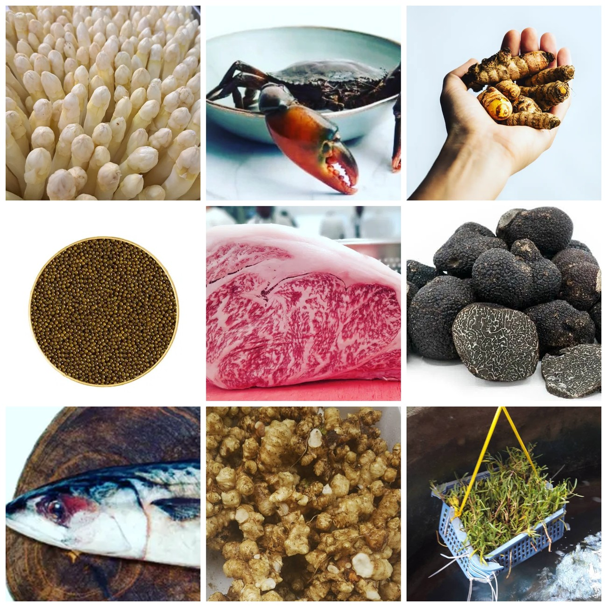
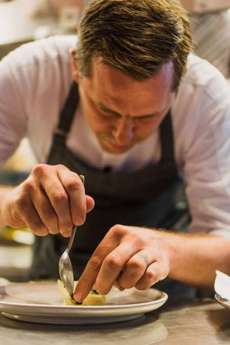
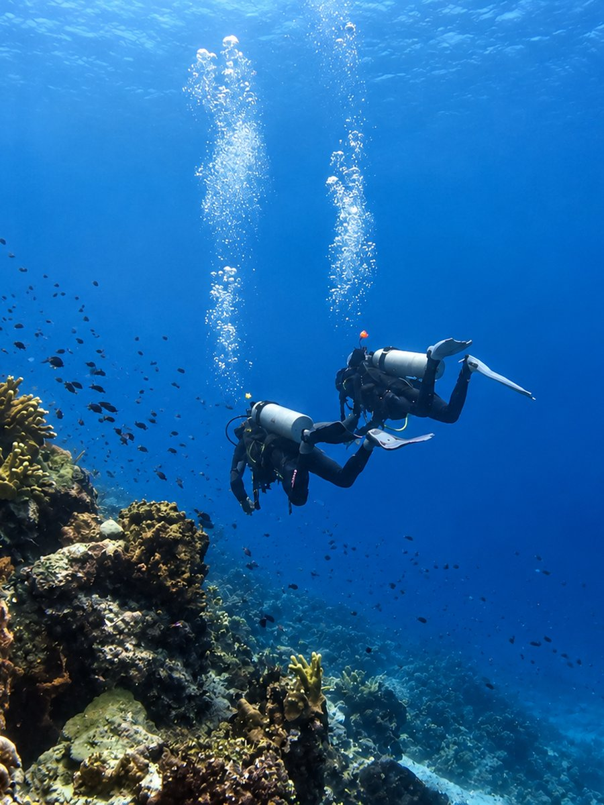
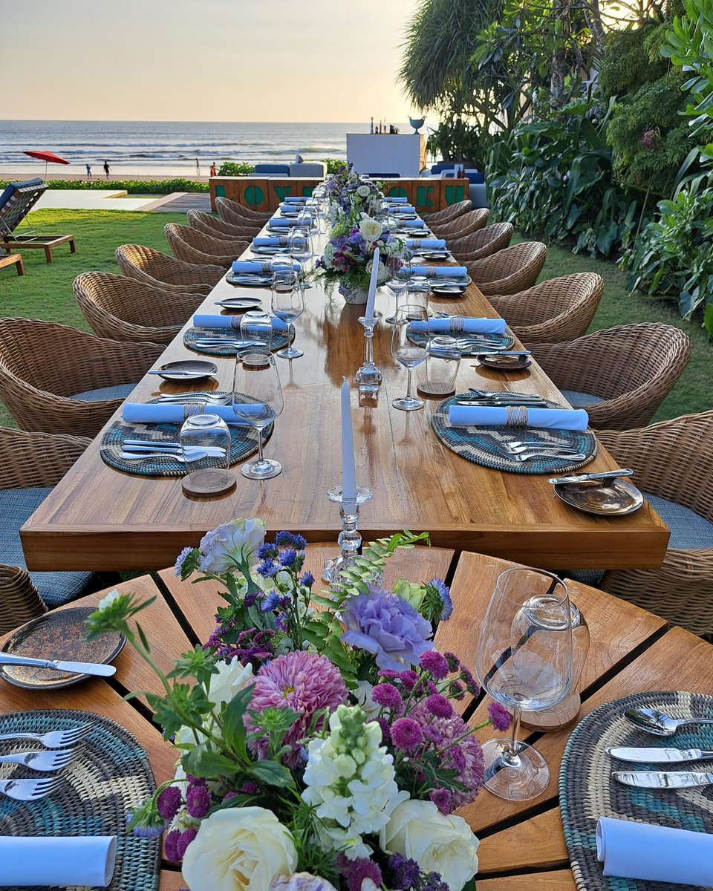

Private Dining · Culinary Events · Bali & Beyond
Private chefs. Culinary experiences.
Bali, Indonesia, and wherever you take us.

Yunic is led by Yuli and Nic, bringing together two different backgrounds and a shared approach to food and hospitality. Yuli brings her Indonesian roots, knowledge and instinct for hospitality; Chef Nic Vanderbeeken brings his European culinary background, technique and more than a decade of cooking and creating in Indonesia.
We listen first. To the people, the place and the occasion. Then, together with our team, we shape an experience that feels right, rather than simply offering what already exists.
01 — What we do

Yunic Dining
Private dinners, sharing tables, celebrations and events, brought into your home, villa or chosen setting. Shaped by European roots, Indonesia, travel, seasons, memory and exceptional produce — and the people around the table.
Sometimes European. Sometimes Indonesian. Sometimes somewhere in between. Sometimes something else entirely.

Yunic Dive & Dine
Diving, food and travel, brought together as one experience. Resort collaborations, pop-ups, diving experiences and destination dining for dive resorts, liveaboards and private yachts, where food is part of the trip rather than something served between dives.

Yunic Culinary
For restaurants, resorts and private kitchens. Honest direction built around how your kitchen actually works: menus your team can cook every service, chefs who carry the standard forward, and ideas that hold up long after we leave.
Menu development · Culinary consulting · Chef training · Kitchen support · Pop-ups · Collaborations
02 — How we work
Tell us where.
Tell us when.
Tell us who’s coming.
If we cannot do it at our best, we say no, and point you to someone who can.
Then we listen.
We talk about the food, the setting, the reason for gathering, and the things that actually matter to you.
From there, Yunic shapes the experience.
No packages pushed on you.
No unnecessary theatre.
Just something considered,
personal and made for that moment.
03 — About Yunic

Yunic began with Yuli and Nic.
Yuli grew up with Indonesian food as part of everyday life: its flavours, traditions and the way food brings people together. She introduced Nic to much more than Indonesian dishes: the memories behind them, the importance of sharing, and an understanding of flavour that can only come from growing up with it.
Nic brought his European culinary background, technique and a chef’s way of looking at ingredients. More than a decade of living and cooking in Indonesia changed that perspective again.
They learned from each other.
That exchange became the foundation of Yunic’s approach to Indonesian food: rooted in Indonesia, shaped by their different experiences, and always respectful of where it comes from.
But Yunic isn’t only about food.
Both are certified divers. Nic has spent more than 26 years diving around the world and eventually brought Yuli into that world too. Travel, diving, markets, restaurants, people and places continue to shape how they think about food and hospitality.


What connects it all is simple:
They want people to have a great experience.
A dinner at home. A Yunic Rijsttafel. An ingredient-led menu. Dive & Dine. Or something completely different.
Together with the Yunic team, they listen first and then decide what makes sense.
And that is why Yunic doesn’t accept every inquiry.
There needs to be a connection between what you are looking for and what Yunic can genuinely bring to it. If there isn’t, we’d rather say so and, when we can, introduce you to someone who may be a better fit.
Perhaps not for everyone.
Maybe for you.
What people say
A table for six. A house full of friends. A Rijsttafel. A menu built around one exceptional ingredient.
We listen first. Then we decide what belongs.